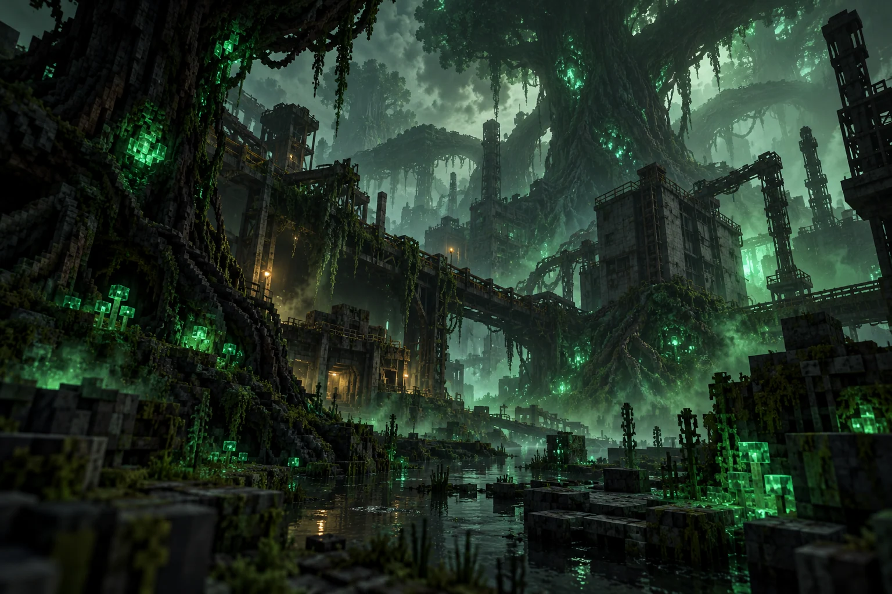
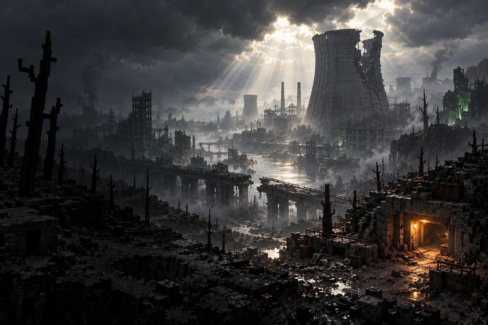
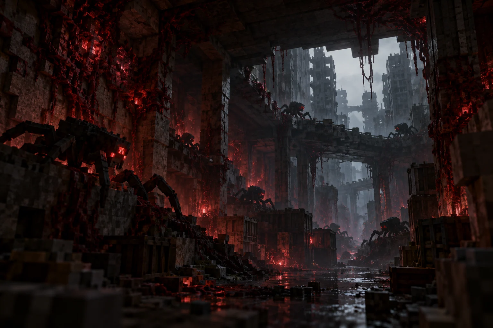
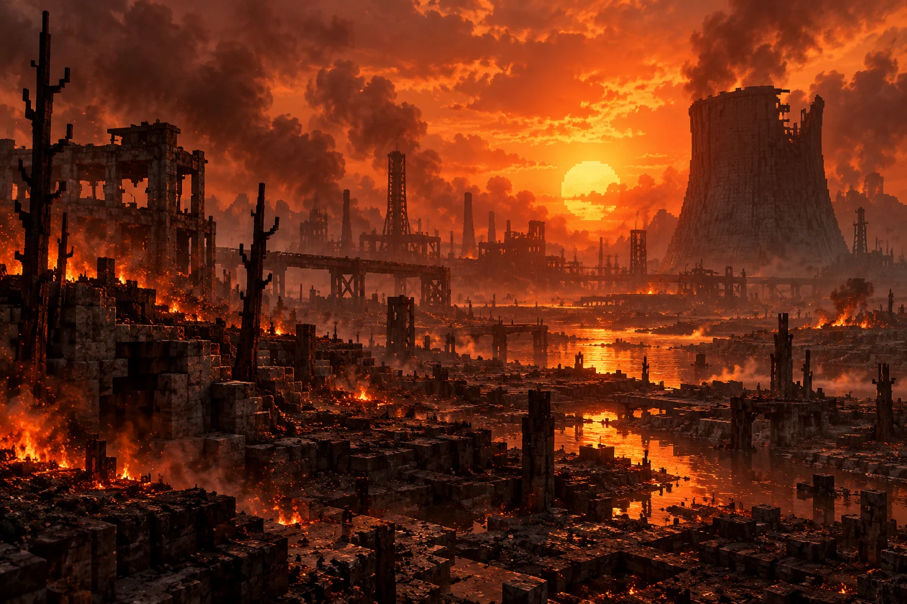
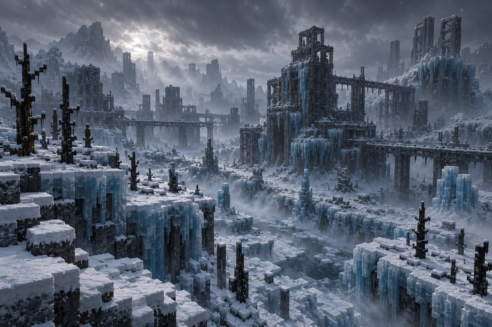
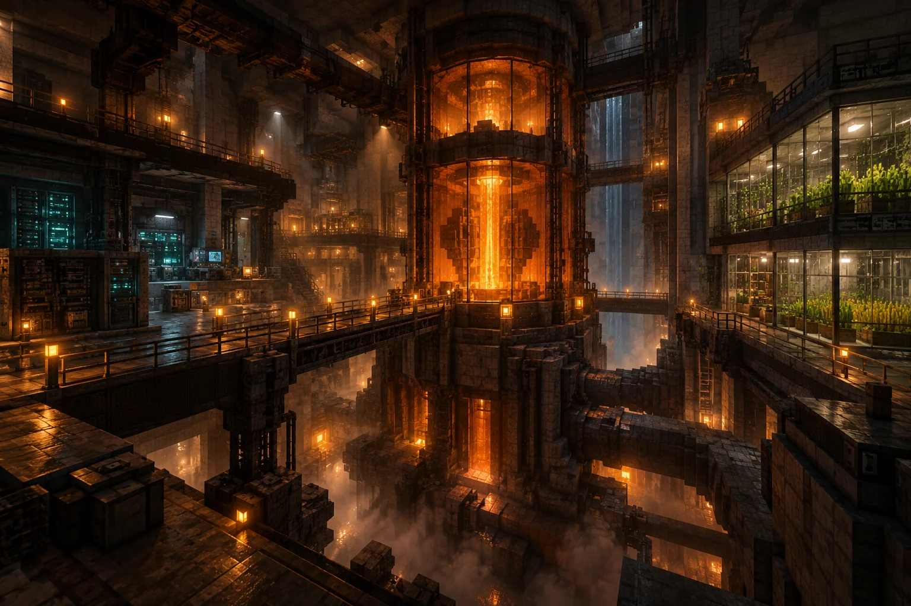

ОРГАНИЗМ 01РАСПРОСТРАНЕНИЕ
Overgrown Vegetation
Лес захватывает руины, меняет ландшафт и развивается по собственным фазам. Споры на периметре — первый признак того, что ваша база ему уже интересна.
Как растёт угроза ↗
Земля пережила конец света.
Теперь её нужно пережить вам.
Постъядерный survival horror с живой
враждебной биосферой. Minecraft, в котором
безопасно только до следующего затишья.
Вы просыпаетесь в бункере после ядерной войны. Наверху — пепел, камень, кратеры и мёртвые стволы. Земля больше не даёт ничего просто так.
Но пустошь не останется пустой. Под её поверхностью начинается новая жизнь. И у неё свои планы.
Планета начинает зеленеть. Но это не возрождение.
Две силы борются за мир, в котором вам ещё предстоит выжить.
ЖИТЬ ВСЕГДА НАЙДЁТ ПУТЬ.
ДАЖЕ ЕСЛИ ЭТА ЖИЗНЬ — ТВОЙ ВРАГ.

Лес захватывает руины, меняет ландшафт и развивается по собственным фазам. Споры на периметре — первый признак того, что ваша база ему уже интересна.
Как растёт угроза ↗
Заражённые Mutationcraft развиваются и давят на оборону. Зимой они станут сильнее, а режиссёр найдёт повод заставить вас снова проверить дальний коридор.
Как меняется противник ↗У КАЖДОГО СЕЗОНА СВОЙ ПРОТИВНИК.
У ВАШЕЙ КОМАНДЫ — ОДНА БАЗА.

Сухая дымка, огонь и ускоренное наступление леса. Открытая деревянная база становится плохой идеей.
Короткое окно передышки. Почините периметр, пополните запасы и решите, куда идти дальше.

Мир обрастает толстым льдом и снегом. Лес замедляется. Паразиты получают преимущество.
Сезоны идут по часам кампании и стоят на паузе, когда на сервере нет игроков. Коэффициенты настраиваются в конфиге.

Постройте автономную подземную крепость. Запустите производство HBM, наладьте добычу, вырастите еду и доверьте рутину автоматизации.
Шесть загрузчиков зон, земля и саженцы в стартовом бункере — один общий запас на всю команду. Всё остальное придётся создать самим.
Шум за стеной. След на земле. Тишина у дальней турели. Вы идёте проверять — мир отвечает на ваше решение.
Сервер оценивает зоны, ресурсы и оборону. Локальная CPU-модель выбирает из допустимых событий. Бюджет, очередь, реакции и передышки контролирует код.
15 событий и их развилки ↗ВИЗУАЛЬНАЯ КОНЦЕПЦИЯ ПРОЕКТА.
НЕ ИГРОВЫЕ СКРИНШОТЫ.
Кооператив на 2–6 игроков. Minecraft 1.21.1,
NeoForge 21.1.262 и Java 21. Клиенту — 6 ГБ памяти.
Готовый ZIP пока распространяется локально.
В репозитории доступны исходники и инструкция по упаковке.
Подготовьте сборкуПолучите Prism ZIP или соберите его по инструкции в репозитории.
Импортируйте в PrismLauncherДобавить экземпляр → Импорт. Выберите Java 21 и выделите 6 ГБ.
Разверните свой серверНастройте мир и режиссёра по документации. Локальный запускатель требует подготовленного окружения.
Несколько ответов,
пока связь ещё работает.
В этой сборке используется Mutationcraft на Minecraft 1.21.1 NeoForge. Оригинальный Scape and Run: Parasites сюда не перенесён. Сезоны и адаптивная сложность связаны с установленными модами через наш координатор.
Локальная модель режиссёра запускается в Docker на CPU. Она выбирает события из серверного списка. Графика игры работает как обычно; иллюстрации на этом сайте показывают художественную концепцию, а не требования к клиенту.
Нет. Сервер ограничивает цели, варианты, бюджет волн и очередь. Произвольных консольных команд в MCP нет. Полная консоль доступна человеку в отдельной локальной админке.
Да. Каталог событий — JSON с графами реакций, звуками и следами. Коэффициенты сезонов, адаптивной сложности и ценности зон вынесены в серверные конфиги. Новые комбинации существующих действий не требуют пересборки мода.
Публичный ZIP в GitHub Releases пока не опубликован. Текущий локальный релиз — 4.3.0; в репозитории есть исходники, зафиксированные версии модов и инструкция по воспроизводимой сборке.
Мир уже пережил конец света. Теперь он учится бороться с тобой.
Начать кампанию